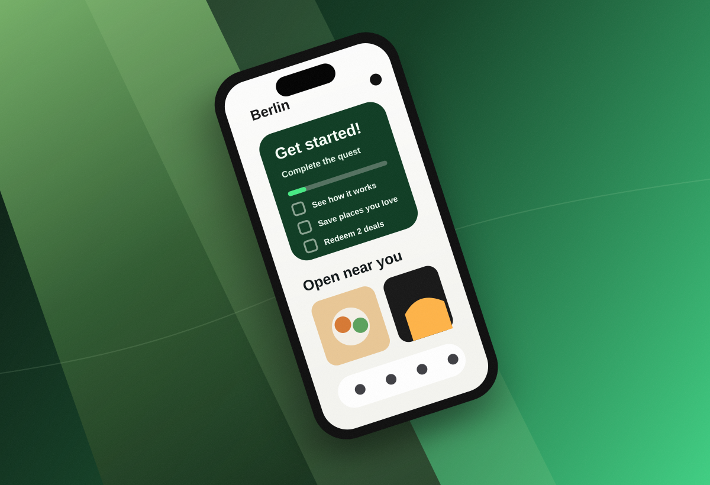

Test the quest shape
Unmoderated studies checked task count, reward expectations, and whether a quest felt supportive or forced.

01NeoTaste / Retention UX
NeoTaste helps people discover restaurants, bars, and cafes through exclusive app-only deals. The Quest guided trial users through five actions that make the app click: understand redemption, personalize food preferences, save places, redeem deals, and review the experience.
01 - Problem Statement
NeoTaste already had a strong value proposition, but a large share of trial users stopped before they experienced enough of the product to understand why it was worth paying for.
The critical behavior was not app opens. It was reaching a second meaningful redemption, because users who crossed that line were much more likely to convert.
Reaching two redemptions became the behavior to design around.
02 - Hypothesis
We explored streaks, discounts, daily challenges, and checklist formats. Streaks rewarded opening the app, but the business needed users to learn the actions that predicted retention.
The hypothesis: if new users complete a lightweight quest around the app's highest-signal actions, they will understand the product faster and be more likely to convert.
If the quest helps users get to their first real win, the reward can be progress and status instead of a cash discount.
03 - Research & Analysis
Unmoderated studies checked task count, reward expectations, and whether a quest felt supportive or forced.
We reviewed onboarding patterns from marketplace, food, and habit products to find useful progress mechanics.
Data analysis focused on trial redemptions, feature discovery, and the relationship between second use and conversion.
Patterns that worked best shared the same quality: they gave users a visible path to value, then got out of the way.
04 - Stakeholder Management
We tied the quest to trial-to-paid conversion and second redemption instead of softer engagement alone.
The final scope avoided a broad achievement system and shipped as a focused onboarding mechanic.
Badge colors, level states, and celebration pieces were added in a way the team could extend later.
The release plan kept tracking simple enough to compare quest users against a clear control group.
05 - Design Process
The final solution used five tasks that introduced the product, improved personalization, and pushed users toward the behavior that mattered: redeeming real deals.
Explain booking and redemption before users face the restaurant moment.
+50 XPCollect early taste signals so recommendations feel relevant from day one.
+80 XPTurn browsing into a personal shortlist and create a reason to return.
+60 XPMove users past the first-use threshold into repeated value.
+120 XPClose the loop and make the community value visible.
+70 XPCompletion ends with a profile badge and a restrained celebration moment.
BadgeThe design solution
Design system updates
Two colors per level: one badge tone and one lighter confetti tone.
Interactions
06 - Metrics & KPIs
The Quest launched to 25% of new trial users and was measured against a control group. The main goal was conversion, with feature discovery and redemptions as supporting signals.
07 - Conclusion
Users did not need more features. They needed a clear path to the actions that make NeoTaste valuable. Once they redeemed a couple of deals and saw the app working for them, they understood why to stay.
Status, progress, and a badge were more sustainable than paying users to complete basic actions.
The Discover entry point made the quest visible without interrupting the default browsing flow.
Limiting the quest to five actions forced a sharper question: which behaviors actually predict retention?
AI robotics / Web design